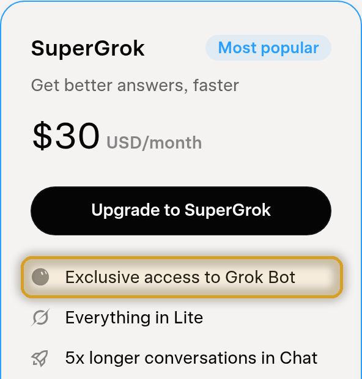
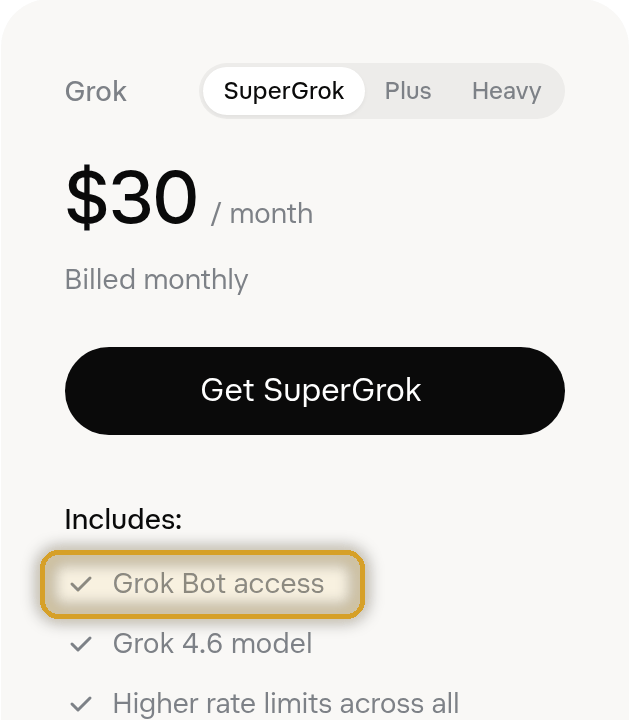

WoW Savant
Better answers than barrens chat.
The ultimate World of Warcraft expert, sitting right beside you.
Quests, gear, talents, rotations, professions, raids, lore, gold – ask WoW Savant anything about World of Warcraft and get a researched answer in an overlay on your screen. Every piece of WoW knowledge at your fingertips, without ever alt‑tabbing out of Azeroth.
- $30 once, then $2/monthOne-off licence plus a subscription you can cancel anytime.
- Keep playing while it researchesReal answers, usually in about 1–2 minutes.
- Powered by your own GrokNeeds your own Grok plan that includes Grok Bot (not included).
Windows 10/11, 64-bit (Intel/AMD). Full requirements
Ask it anything
If it's in World of Warcraft, it's fair game. No more wiki rabbit holes, forum threads from three expansions ago or twelve open browser tabs. Just ask.
Quests & routes
Where to go, who to talk to and how to get there.
“Where do I turn in this quest, and how do I get there from here?”
Gear & upgrades
Find your next upgrade and where it drops.
“What's best-in-slot for my spec, and where do I get it?”
Talents & builds
Builds for levelling, dungeons, raids and PvP, explained.
“What's a good levelling talent build for a Hunter?”
Classes & rotations
Play your spec like you've mained it for years.
“What's the single-target rotation for an Arcane Mage?”
Professions
Recipes, trainers, materials and the smartest way to skill up.
“Where do I learn this recipe, and what mats do I need?”
Dungeons & raids
Bosses, mechanics and loot, before you pull.
“What do I need to know before this boss fight?”
Reputation & rewards
Every faction, every grind, every reward worth chasing.
“What's the fastest way to Exalted with this faction?”
Mounts, pets & collections
Hunt down the rare stuff and show it off.
“How do I get this mount, and where does it drop?”
Lore
The stories, the characters, the history of Azeroth.
“Who is this NPC, and why do they matter?”
Gold & economy
Ideas for filling your bags with gold.
“What's a good way to make gold at my level?”
Addons & macros
Tune your UI and automate the fiddly stuff.
“Can you write me a macro for this ability?”
Patches & phases
What changed, what's coming and what it means for you.
“What was added in this phase?”
That's why it's called Savant: every piece of WoW knowledge, right inside your game.
Why it's different
It doesn't just answer you – it gets you there.
You never leave the game
It lives in its own window over WoW. Tap your hotkey to show or hide it. No alt-tab, no lost momentum, no dying while you read a wiki.
It sees where you are
Lost? Press Ctrl+V to paste a map screenshot and ask “Where am I?” or “How do I get there?”
Paste-ready waypoints
TomTom /way commands ready to drop into chat. Crossing zones? The exit from your current zone always comes first.
Knows your version of WoW
WoW Forever by default, with Classic Era, Anniversary and Retail just a setting away. Answers are tuned to the version you pick.
Verified sources, no made-up pins
It checks trusted WoW databases and won't make up coordinates. If it doesn't have a verified pin, it tells you straight.
“Next step” for epic journeys
Multi-stop trip across the world? Hit “Next step” and it walks you through every leg.
Hover tooltips on items
Items in answers are links with hover tooltips, so you can size up loot at a glance.
Made for gaming
Solid, readable window, a guided setup wizard and an optional “Zug zug” sound.
Hands off your game client
It's a completely separate window. No memory reading, no injection, no botting.
Up and running in three steps
-
Buy and install
Get your Licence and your subscription, then download and install WoW Savant on your Windows PC.
-
Run the setup wizard
The wizard gets you set up and connects your own Grok Bot to your PC.
-
Ask in game
Hit your hotkey and ask anything. WoW Savant researches it and comes back with a real answer – and waypoints when you need to go somewhere.
Requirements
You need your own Grok plan that includes Grok Bot. It is not included with WoW Savant. Grok Bot must be connected to your PC. See which plans include Grok Bot.
Supported
- Windows 10 or Windows 11
- 64-bit, Intel or AMD (x86-64)
- WoW in windowed or borderless mode
- Grok Bot, with your PC connected
Not supported
- Windows 7 or 8
- Windows on ARM
- Mac or Linux
- WoW in exclusive fullscreen
Put a Savant in your game
Every piece of WoW knowledge, one hotkey away.
$30 USD
one-off licence, then $2 USD/month
Cancel your subscription anytime.
Check your Grok plan
You need Grok Bot
WoW Savant needs Grok Bot. It's included with SuperGrok ($30/mo), SuperGrok Plus ($100/mo), SuperGrok Heavy ($300/mo), or a Cursor Pro, Pro+, Ultra or Teams plan. SuperGrok Lite, SuperGrok Business and the Grok API do not include Grok Bot.


See xAI's Grok Bot plans (opens in a new tab) SuperGrok plans (opens in a new tab)
Screenshots from xAI's plan pages, October 2026. Plans and prices are set by xAI and may change.
Before you buy: Grok Bot (not included) must be connected to your PC, and your PC needs:
- Windows 10 or 11, 64-bit, Intel/AMD (x86-64)
- WoW in windowed or borderless mode
- Not for Windows 7/8, Windows on ARM, Mac or Linux
Full details in Requirements.
You need both. Your licence is yours forever – if you ever cancel and come back, you only restart the $2/month.
Tick the box above to continue.
Your keys work on one PC at a time – move them any time with Settings > Deactivate this PC. Payments, tax and receipts are handled by Lemon Squeezy. See the refund policy.
FAQ
What can I ask it?
Anything about World of Warcraft. Quests, routes, NPCs, items, gear and best-in-slot upgrades, talents and builds, class and spec advice, rotations, professions and recipes, dungeons and raids, bosses and mechanics, reputations, mounts, pets, lore, gold-making, addons and macros, patch and phase details – if it's WoW, ask away.
Do I need a Grok subscription?
Yes. WoW Savant runs on your own Grok plan that includes Grok Bot, connected to your PC. It isn't included in the price. See which plans include Grok Bot.
Does it work with the Grok API or SuperGrok Lite?
No – it needs a plan that includes Grok Bot: SuperGrok ($30/mo), SuperGrok Plus ($100/mo), SuperGrok Heavy ($300/mo), or a Cursor Pro, Pro+, Ultra or Teams plan. SuperGrok Lite, SuperGrok Business and the Grok API do not include Grok Bot. See You need Grok Bot above.
How much does it cost?
$30 USD for your one-off Licence – yours forever – plus a $2 USD/month subscription. You need both. Cancel your subscription anytime (see below). Your Grok subscription is separate and paid to xAI – see xAI plans.
What if I cancel?
Cancel your subscription anytime. WoW Savant keeps working until the end of the month you've paid for, then stops until you restart your subscription. Your $30 licence is yours forever – you never pay it again.
Bought only one of the two?
No problem – just grab the other one. WoW Savant tells you which key is missing, and there's no penalty or extra fee.
How fast are answers?
Usually about 1–2 minutes. That's because it actually researches your question rather than guessing – so you get an answer worth waiting for. Keep playing while it works.
Which WoW versions are supported?
WoW Forever is the default. You can also switch to Classic Era, Anniversary or Retail.
Can it get things wrong?
It works hard not to. It researches each question, checks trusted WoW databases for locations and never invents coordinates – if it doesn't have a verified pin, it says so. Game info does change, though, so treat it like a very well-read friend, not a guarantee.
Is it against the rules? Does it touch the game client?
WoW Savant is a separate window. It doesn't read or modify the game – no memory reading, no injection, no botting. You type or paste in your question and it answers. As always, you're responsible for playing within the game's rules.
Does it work in fullscreen, or on Mac, Linux or Windows on ARM?
Not in exclusive fullscreen – run WoW in windowed or borderless mode. And it needs 64-bit Windows 10 or 11 on an Intel or AMD (x86-64) PC, so Mac, Linux and Windows on ARM aren't supported.
Can I use my keys on more than one PC?
Your keys work on one PC at a time – move them any time with Settings > Deactivate this PC. If the old PC is gone, email wowsavant.support@gmail.com and we'll sort it out.
Can I get a refund?
If it doesn't work on a supported system and we can't fix it through support, you can get a refund within 14 days. Details are in the refund policy.
How do I get help?
Email wowsavant.support@gmail.com.